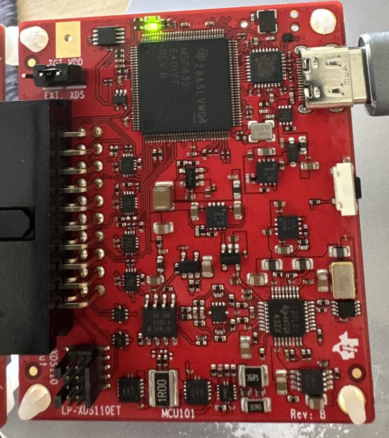

ordered 2026-10-04.LP-XDS110ET debugger
TI's stand-alone debug probe with EnergyTrace: powers, programs and measures the current of boards that have no built-in debugger, such as the LP-EM radio boards.
- Use it for
- Programming CC2340R5, CC2755 and CC35xx boards
- Measuring a board's current with EnergyTrace (700 nA to 400 mA per TI's quick start guide)
- A serial port to the Mac for the board's text output
- Hook it up
- USB-C to the Mac (cable in the box). The LP-EM board's 20-pin edge goes into the probe's 20-pin socket. TGT VDD jumper on XDS when the probe powers the board (CC2340R5, CC2755P10, and needed for EnergyTrace); on EXT when the board powers itself (CC35X1). One LP-EM board at a time.
Where to buy: TI.com, LP-XDS110ET.
Print a message from the board on your computerSend a sensor reading to a phone over BluetoothSwitch a board's LED from Home Assistant over ZigbeeDetect a person in a room with Wi-FiUpdate a board's firmware over the airMeasure how fast a chip runs (CoreMark)How fast a chip reacts to a signalBuild and flash from the terminal in one commandRun the Zephyr real-time operating systemRun the FreeRTOS real-time operating systemRun Arduino's own sketches on a TI chipProgram a TI chip in Python (MicroPython)Configure a TI radio chip with ESPHomeAsset tracking over BluetoothMake a Bluetooth game controller from a LaunchPadA DNS ad blocker on a Wi-Fi boardA voice assistant on a LaunchPad